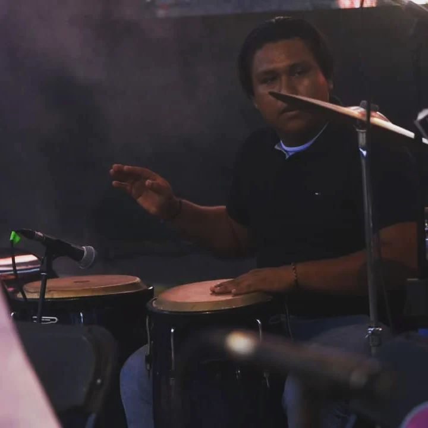

Marcos Antonio Santiago Besiche
Estudiante de Ingenieria en Sistemas - Estudiante de quirofisica
Datos personales
🎂 Fecha de nacimiento: 8 de mayo del 2000
Nacionalidad: Mexicana
Estado civil: Soltero
Experiencia laoral
🎼 Musico de agrupaciones
🚘 Chofer particular
💆Ayudante de terapeuta
Conocimientos
📱 Android
🖥️ Windows
🖥️ Linux
🖥️ Mac
🖥️ Office
🖥️ Photoshop
Habilidades
Deportivas
🏀 Basquetbol
🏈 Futbol
🏓 Voleibol
Culturales
🎼 Musica
🎨 Pintura
Idiomas
🇲🇽 Español = 100%
🇺🇸 Ingles = 40%
Cursos
📚 Curso de programacion en Java
Curso de percuciones intermedias
Curso de arbitraje
Curso de primeros auxilios